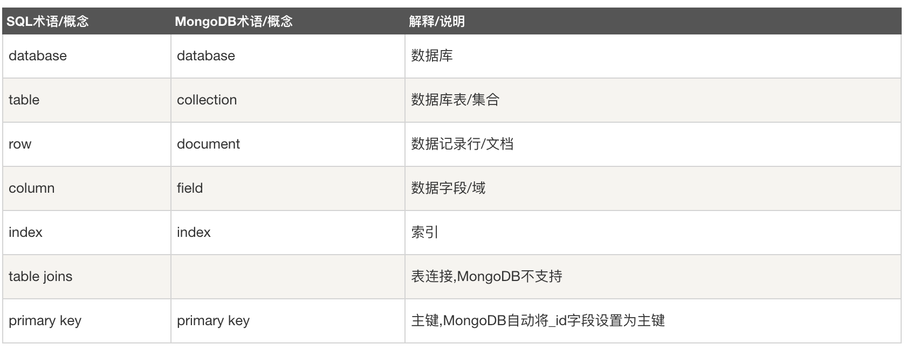
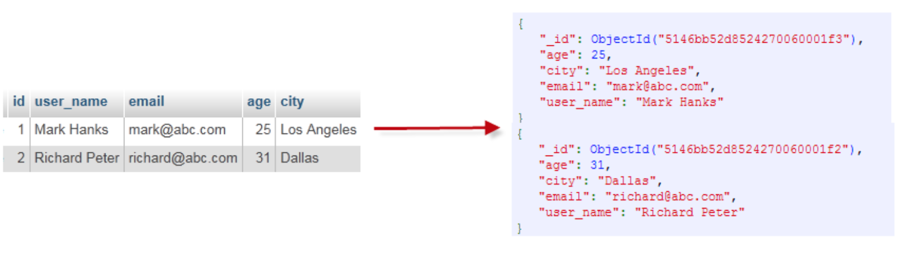

MongoDB 是一个目前比较流行的NoSQL数据库，用来存储非关系型数据的。这篇博客主要介绍如何安装以及用java driver调用和连接MongoDB数据库。同时也介绍了如果用MongoDB的shell直接在命令行中进行数据处理。
MongoDB和SQL的区别与联系
如下图所示：

一个真实的example对比如下：

安装MongoDB
安装过程
- 因为MongoDB宣布不再开源，Homebrew 已经把他移除除了自己的仓库，因此安装MongoDB需要用到tap方法，在github中寻找源代码来安装：
- 安装MongoDB:
1
| brew install mongodb-community
|
- 开启/关闭MongoDB的port:
1
2
| brew services start mongodb-community
brew services stop mongodb-community
|
命令行一些简单操作
- 使用MongoDB shell的话，需要在开启service之后，执行
mongo来开启shell。
- 显示当前的collection:
db
- 显示所有的collection:
show dbs
- switch 不同的collection:
use collection_name
- 查询数据：
db.collection_name.find()。 db.collection_name.find().pretty()显示出格式化结果。
- MongoDB的数据库默认是存在
/data/db路径下的。
Java调用MongoDB
- 需要三个jar包，包括：mongodb-driver, bson和mongodb-driver-core
- 连接数据库，你需要指定数据库名称，如果指定的数据库不存在，mongo会自动创建数据库。
- 使用Java的时候，要保证MongoDB的service 是开启的，即需要提前执行
brew services start mongodb,否则会找不到端口从而连接数据库。
- 基本代码请看 博主本人的git repository
参考文献：